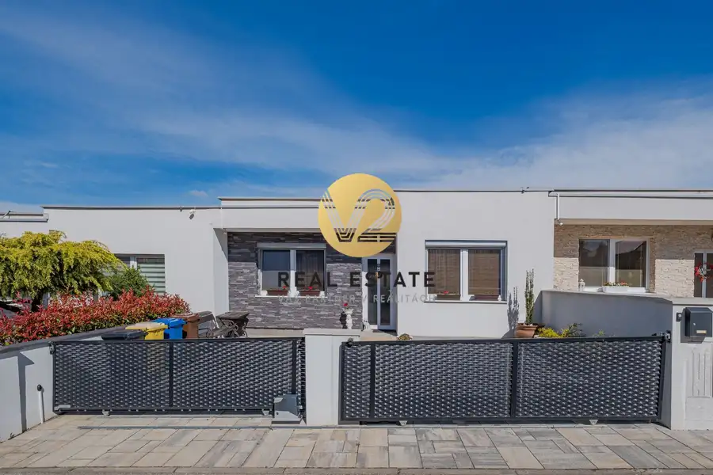
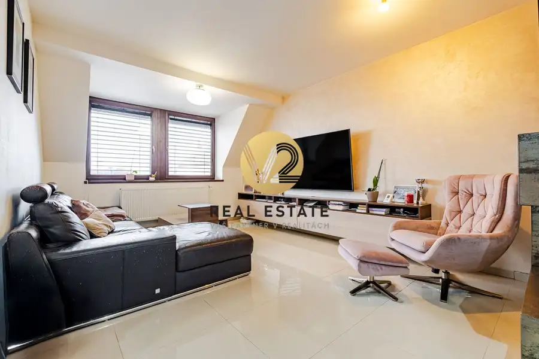
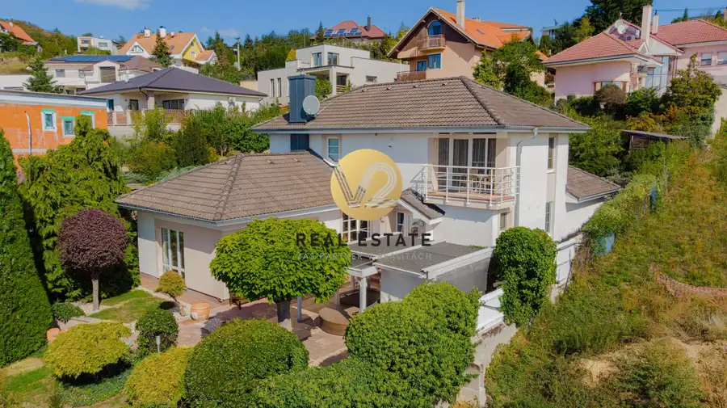

Na PREDAJ výnimočný 4i byt 161m2 od architektov s terasou v centre Nitry
Nitra
- Dispozícia4-izbový
- Plocha161 m²
- Poschodie2. z 4
- StavNovostavba
- Energetická triedaA
O nehnuteľnosti
Maroš Vereš +421 904 086 200e-mail: maros.veres@v2realestate.skV2 real estate ponúka na predaj výnimočný 4‑izbový byt ktorý vznikol kompletnou architektonickou realizáciou na mieru. Nachádza sa v absolútnom centre Nitry a ponúka veľkorysý priestor, nadštandardné materiály, terasu plnú zelene a nádherný výhľad na mesto. Ide o nehnuteľnosť, ktorá sa na trh nedostáva každý deň. Tento byt je určený pre klienta, ktorý hľadá niečo výnimočné – architektúru, priestor, súkromie a prémiový mestský životný štýl v centre Nitry.Lokalita: Nitra - Staré MestoPoschodie - 2Výťah: ánoCelková výmera: 161m2 úžitková plocha bytu 117m2 Terasa: 44m2Parkovanie: áno garážKobka•Byt bol navrhnutý architektmi do posledného detailu – od terasy a zelene až po interiér a nábytky na mieru. Každý prvok má svoj účel, logiku a estetiku. Výsledkom je harmonický, nadčasový a dokonale funkčný domov.•Dispozícia a vybaveniepriestranná vstupná chodba s množstvom úložného priestoru, samostatná toaletaveľkorysá obývacia izba s jedálenskou časťou a knižnicou na mierukompletne vybavená kuchyňa sa spotrebičmi AEG najvyššej rady, vrátane jedálenského ostrovčekadve samostatné detské izby, hlavná spálňa s výstupom na terasuveľká kúpeľňa so sprchovým kútom, dvoj-umývadlom a zabudovanou práčovňoudruhá samostatná toaletaz každej izby je priamy vstup na terasu plnú zelene•Technológie a štandardstropné chladenie, podlahové kúrenie, vonkajšie elektrické žalúzienadštandardné materiály a remeselné spracovanie•Parkovanie v garáži, vrátane miesta pre elektrické auto, priestranná kobkaviac informácií sa dozviete na:Maroš Vereš +421 904 086 200e-mail: maros.veres@v2realestate.sk
Parametre
| Cena vrátane energií | Nie |
|---|---|
| Druh | 4 izbový byt |
| Dátum zverejnenia | 21. 6. 2026 |
| Energetický certifikát budovy | A |
| Podlažie | 2 |
| Počet nadzemných podlaží | 4 |
| Rok výstavby | 2021 |
| Stav nehnuteľnosti | Novostavba |
| Telekomunikácie | Optická sieť |
| Typ | Predaj |
| Typ konštrukcie | Železobetónová |
| Vybavenie | Výťah |
| Vykurovanie | Podlahové |
| Úžitková plocha | 161 m² |
Kde to je


Mohlo by Vás zaujímať

DomNové10 279 000 €Na PREDAJ 4i bungalov stačí sa iba nasťahovať, Nitra - Nový- Cabaj Nitra 90 m² Maroš Vereš +421 904 086 200e-mail: maros.veres@v2realestate.skV2 real estate ponúka na predaj 4 izbový bungalov s s ideálnou dispozíciou, prekrytou…
BytNové10 279 000 €Znížená cena Na PREDAJ 3 izbový byt 105m2 v novostavbe s terasou a dvomi kúpeľňami, Nitra-Centrum Nitra 3-izbový105 m²4. podlažie Maroš Vereš +421 904 086 200e-mail: maros.veres@v2realestate.skV2 Real Estate ponúka na predaj priestranný 3‑izbový mezonetový byt s terasou, krbom,…
DomNové10 Cena dohodouNa PREDAJ 5i rodinný dom 195m2 vo vyhľadávanej lokalite s krásnym vhľadom na mesto Nitra-Zobor Nitra 195 m² Maroš Vereš +421 904 086 200e-mail: maros.veres@v2realestate.skV2 real estate ponúka na predaj 5 izbový rodinný dom v obklopení zelene s krásnym…